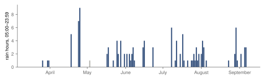
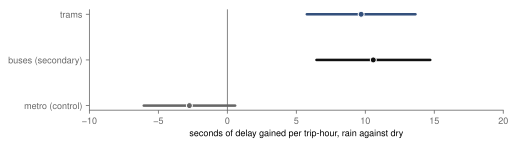
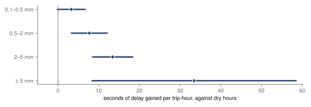
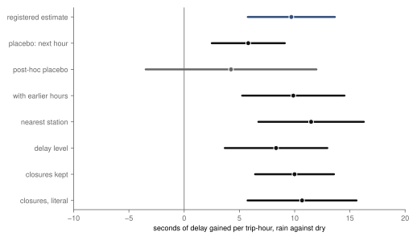
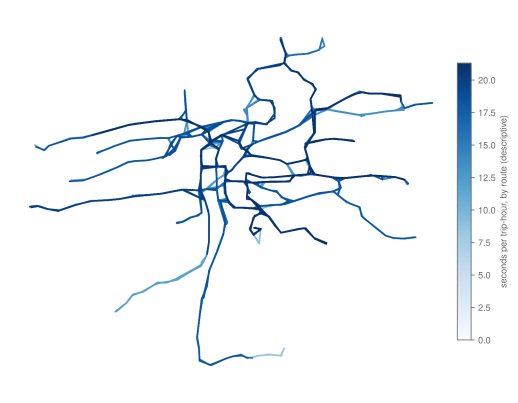

Research · transit · Prague trams and buses, March–September 2025
Does rain delay Prague's trams? Rain hours and delay, 2025
A pre-specified analysis of 121 197 794 stop passes and the hourly rain gauges of the Czech Hydrometeorological Institute: in an hour with rain, a tram gains about 9.7 seconds more delay than the same route at the same hour and weekday when it is dry. The registered hypothesis is supported; buses, a secondary estimate, gain about as much, and the metro, underground, does not.
- trams, rain against dry
- +9.7 s delay gained per trip-hour · 95 % confidence interval (CI) 5.8 to 13.6 · supported
- city buses, secondary
- +10.6 s 95 % CI 6.5 to 14.7 · supported
- metro, negative control
- −2.8 s 95 % CI −6.1 to 0.6 · underground, on its own track
- trams in an hour with 5 mm of rain or more
- +33.5 s 95 % CI 8.4 to 58.5 · a registered check by amount of rain
Overwhelmed? Here's the short version
- The question was set down before any delay was read: does a Prague tram fall further behind schedule in an hour with rain than in a dry hour?
- It does, by about 9.7 seconds per trip and hour (5.8 to 13.6), against a dry-hour average of about 55.9 seconds. Buses gain about 10.6 seconds.
- The more it rains, the more delay: from about 3.3 seconds in a drizzle to about 33.5 seconds in an hour with 5 mm or more.
- The metro, which the rain does not reach, shows no increase, and rain one or two hours earlier adds nothing once the current hour is counted.
- One registered check did not come out as expected: rain in the next hour also goes with more delay now, about 5.8 seconds, probably because rain rarely stops on the hour.
- In practice: ten seconds an hour is small for one trip and adds up across a city's network on the same afternoon.
Photo: Aktron · CC BY-SA 4.0, toned

Rain changes a tram ride in several small ways at once: stops fill up, umbrellas slow the boarding, cars that would have been bicycles crowd the junctions, and drivers brake earlier on wet rails. Studies of road traffic agree that rain slows it56, and studies of ridership find that bad weather changes how many people travel7. How much of that reaches a tram, which runs on its own rails for much of the city but shares junctions and stops with everything else, is a smaller and more measurable question, and the data to answer it exist: every Prague tram reports its position, and the national weather service publishes rain by the hour.
The question here was written down before any delay was read. In a clock hour with rain in Prague, does a tram gain more delay than in a dry hour of the same route, at the same hour of the day and on the same weekday, in the same season? The answer is measured in seconds of delay gained during the hour, not in the delay a tram carries, because a tram that left its terminus late will stay late for the rest of its trip whatever the weather. Buses were measured alongside as a secondary estimate, and the metro, underground and on its own track, as a control that should not react to rain at all.
Data
The delays come from the history of Prague Integrated Transport that the author collected from Golemio, the city's open-data platform, for a master's thesis on how delays persist through the day12. It covers 15 March to 8 September 2025 and holds 121 197 794 rows. Each row is one vehicle passing one stop on its way to the next, with the scheduled and observed times and the delay at that stop. The design had expected raw positions; the rows turned out to be stop passes, so "position" in the registered definition is read as a stop pass. For each trip and clock hour with at least two passes, the delay gained is the delay at its last pass in the hour minus the delay at its first. A unit of analysis is one route in one direction on one date in one hour, from 05:00 to 23:59 Prague time, and its outcome is the mean delay gained over its trips. The direction is the trip's terminal stop, so short turns and diversions form units of their own.
The rain comes from the Czech Hydrometeorological Institute's open climate data3: the hourly precipitation total at Ruzyně, Libuš, Kbely and Klementinum. An hour is a rain hour if the four stations average at least 0.5 mm. It is a dry hour only if all four recorded nothing in that hour and in the two before it, so that wet rails and lingering crowds after a shower do not count as dry. Hours in between are left out of the main comparison and return only in the check by amount of rain. In the window, rain fell in 122 of the service hours on the dates analysed, spread over 47 dates, against 2 608 dry hours (fig. 1). The wettest day was 25 April, with 9 rain hours.
Rain fell in 122 hours on 47 of the 170 dates analysed; most days stayed dry.

Three screening rules were fixed in advance and applied before any delay value was read. The first removes route-days with a planned closure, diversion or replacement service. Prague Integrated Transport deletes its change pages once a change is over, so the announcements were recovered from the Internet Archive4: 240 planned changes touching a tram or city bus line in the window. The 8 archived snapshots of the list of changes name 173 such closures, of which 125 also have their own archived page; the rest were taken from the snapshots. Closures that began and ended between two snapshots without an archived page are missed, and their number is unknown. Incidents such as accidents and breakdowns were not removed, because rain can cause them. Three tram closures lasted the whole window, among them the Libeň bridge, closed to trams since November 2024; a route that is diverted on every date is that route's normal pattern here, so they do not exclude. The rule removes 1 320 tram line-days. The second rule drops dates on which the feed went silent for more than an hour between 05:00 and 23:00: 8 dates, two of them the edges of the window. The third drops units with fewer than two trips, 4.2 % of tram trip-hours. What remains is 132 443 tram units in rain or dry hours on 170 dates.
How the estimate works
The comparison is between rain and dry hours of the same route, direction, hour of the day and weekday, and within the same date. In a regression, that means a separate level for every route, direction, hour and weekday, which absorbs the fact that line 22 at 17:00 on a Friday is always slower than line 31 at 10:00 on a Sunday, and a separate level for every date, which absorbs anything that affects a whole day: the season, a football match, the start of the school holidays. The rain estimate is then identified from rain and dry hours within the same day and from the same route-hour on different days. It is estimated by ordinary least squares with pyfixest8, and the uncertainty is clustered by date, because rain falls on the whole city at once and a wet afternoon is one piece of evidence, not hundreds. A wild bootstrap was registered for the case of fewer than 30 rain dates9; with 47, it was not needed.
The rule for reading the result was set in advance. The hypothesis is "supported" if the 95 % interval lies wholly above zero and "not supported" if the 90 % interval lies wholly within ±10 seconds, a margin fixed as smaller than any delay a passenger would notice, tested in the manner of an equivalence test10; anything else is "inconclusive". Before the estimate, the power calculation was re-run with the spread the data imply, read without the rain indicator: units vary by about 37 seconds around their usual level and the whole city by about 12 seconds from hour to hour, which gives a standard error of about 2.0 seconds and a smallest detectable effect of 5.6 seconds.
Trams, buses and the metro
In an hour with rain, a Prague tram gains 9.7 seconds more delay than in a dry hour of the same route, hour and weekday (95 % CI 5.8 to 13.6). The interval lies wholly above zero, so by the rule set in advance the hypothesis is supported. The raw averages show the same order of size before any adjustment: a tram trip gained 67.3 seconds in an average rain hour and 55.9 seconds in an average dry hour. Against the dry-hour average, the estimate is about 17 % more delay per hour. City buses, the secondary estimate, gain 10.6 seconds (6.5 to 14.7), also supported, from 45.6 seconds in dry hours to 55.2 in rain hours on average. The design expected buses, which share the road with cars, to lose more than trams; their estimate is a little larger, with intervals that overlap almost completely, so the data do not separate the two (fig. 2).
The metro, the control, runs underground on its own track and should feel rain only through crowding at the stations. Its estimate is −2.8 seconds (−6.1 to 0.6), an interval that includes zero, as expected.
In a rain hour, trams gain 9.7 s more delay than in a dry hour (5.8–13.6), supported; buses gain 10.6 s, the metro does not react.

More rain, more delay
If rain is what slows the trams, heavier rain should slow them more. The registered check splits the hours by how much rain the four stations averaged and compares each band with dry hours. In a drizzle of 0.1 to 0.5 mm, trams gain 3.3 seconds (−0.1 to 6.7); in 0.5 to 2 mm, 7.7 (3.3 to 12.1); in 2 to 5 mm, 13.4 (8.5 to 18.4); and in an hour with 5 mm or more, 33.5 seconds (8.4 to 58.5). Each step is larger than the last (fig. 3). The heaviest band has few hours, and its interval is wide, but even its lower end is above the estimate for a drizzle.
The delay grows with the rain: 3.3 s in a drizzle, 33.5 s in an hour with 5 mm or more.

Checks
The other registered checks change the estimate little (fig. 4). Measuring rain at the station nearest each route instead of the four-station mean gives 11.5 seconds (6.7 to 16.3). Measuring the mean delay a tram carries in the hour (its level), instead of the delay it gains, gives 8.3 (3.7 to 13.0). Keeping the planned closures gives 10.0 (6.4 to 13.6), and reading the closure rule literally, so that the three closures lasting the whole window also exclude, gives 10.7 (5.7 to 15.6); the result does not rest on how the closures were screened. Adding rain one and two hours earlier to the model leaves the current hour at 9.9 seconds (5.2 to 14.5) and gives 0.3 and −1.5 seconds to the earlier hours, with intervals around zero: the delay is gained in the hour it rains, not afterwards.
The registered placebo replaces rain in the current hour with rain in the next one, which cannot cause anything now, and was expected near zero; it did not come out that way. It gives 5.8 seconds (2.5 to 9.1). The likely reason is that rain persists: when the next hour is wet, the current one often is too, or has just stopped below the 0.5 mm line, so the placebo picks up part of the real effect. The check with earlier hours points the same way, since rain that has stopped leaves no trace. A cleaner placebo, added after this result and not registered, uses only hours that are dry now and asks whether rain in the next hour goes with more delay. It gives 4.2 seconds (−3.5 to 12.0), on only 507 units with rain in the next hour. Its interval includes zero but is too wide to rule out a few seconds; it neither confirms the persistence reading nor contradicts it.
Every check stays near the registered 9.7 s except the placebo, 5.8 s; rain that outlasts the hour is the likely reason.

Routes
The design asked for a map of routes by their own estimate, as description rather than test. For the 27 tram routes with at least 60 rain units, every one has a positive estimate, from 3.5 seconds on line 31 to 21.3 on line 11, and 14 of them have an interval wholly above zero (fig. 5). With one estimate per route, some of the spread is chance, and the routes were not ranked or tested against each other, so the map is not evidence that any line suffers more than another.

What this means
Measured: in an hour with rain, a Prague tram falls about 9.7 seconds further behind schedule than in a dry hour of the same route at the same time, and the effect grows with the amount of rain and stops when the rain stops. Buses lose about as much. For one passenger on one trip, ten seconds an hour is hardly noticeable. A wet afternoon, though, slows every tram on the network in the same hours, and the thesis behind this data found that delays persist through the day1. A timetable that holds in dry weather has a little less slack on a rainy one, and the stops where passengers wait in the rain are where those seconds are spent. The study cannot say which part of the delay is boarding, traffic or braking; it measures the sum.
What this does not show
A rain hour brings more passengers boarding slowly, more cars on the road, lower speeds and wet rails, and the estimate is the total of all of them, not the effect of water on a tram. The window runs from March to September, so it says nothing about snow or frost. It is one season of one year, and the network, timetables and closures change from year to year. The delay is an average per trip and hour; it does not tell how late a given tram will be. The rain is measured at four stations, while showers in summer can be local, so some hours counted as dry may have been wet on part of the network, which would make the estimate smaller rather than larger. The list of closures comes from an archive in which about seven in ten of the listed closures have their own page, and the screening may have missed short closures; the checks that keep or widen the closures suggest this matters little. Finally, the placebo registered for this study is not clean, for the reason given above.
Reproduction
Every number on this page is filled in from the result files by a script. From the repository root:
tools/rain/power.py: rain and dry hours and the power calculation from precipitation alone.screen_pid.pyandscreen_feed.py: the three screening rules.units.py: the units, the only step that reads delays;test_rain.pychecks it on a hand-worked example.power_rerun.py,estimate.pyanddescribe.py: the power with the data's spread, the registered estimates and the descriptive and post-hoc numbers.article.py: the figures and this page.
The design is docs/research/rain-delays-design.md, the screening rain-delays-screen.md.
References
- Šandová, B. (2026). Persistence Dynamics and Welfare Costs of Urban Public Transport Delays. Master's thesis, Institute of Economic Studies, Faculty of Social Sciences, Charles University, Prague. Summary at bsandova.com/texts/thesis. Not yet in a public repository.
- Operátor ICT. Golemio, Prague's open-data platform: Prague Integrated Transport vehicle positions and stop-time history, collected 15 March – 8 September 2025. golemio.cz. Accessed 8 October 2026.
- Czech Hydrometeorological Institute (ČHMÚ). Open climate data: hourly precipitation (SRA1H), stations Praha-Ruzyně, Praha-Libuš, Praha-Kbely and Praha-Klementinum, 2025, and station metadata; CC BY 4.0. opendata.chmi.cz. Accessed 6 October 2026.
- Pražská integrovaná doprava. Změny dopravy (list of changes) and individual change pages, archived snapshots 2024–2025. web.archive.org, pid.cz/zmeny. Accessed 7–8 October 2026.
- Koetse, M. J., Rietveld, P. (2009). The impact of climate change and weather on transport: an overview of empirical findings. Transportation Research Part D 14(3), 205–221. doi:10.1016/j.trd.2008.12.004. Accessed 8 October 2026.
- Tsapakis, I., Cheng, T., Bolbol, A. (2013). Impact of weather conditions on macroscopic urban travel times. Journal of Transport Geography 28, 204–211. doi:10.1016/j.jtrangeo.2012.11.003. Accessed 8 October 2026.
- Arana, P., Cabezudo, S., Peñalba, M. (2014). Influence of weather conditions on transit ridership: a statistical study using data from smartcards. Transportation Research Part A 59, 1–12. doi:10.1016/j.tra.2013.10.019. Accessed 8 October 2026.
- Fischer, A., and contributors. pyfixest: fast high-dimensional fixed-effects regression in Python, version 0.60.0. github.com/py-econometrics/pyfixest. Accessed 8 October 2026.
- Cameron, A. C., Gelbach, J. B., Miller, D. L. (2008). Bootstrap-based improvements for inference with clustered errors. The Review of Economics and Statistics 90(3), 414–427. doi:10.1162/rest.90.3.414. Accessed 8 October 2026.
- Lakens, D. (2017). Equivalence tests: a practical primer for t tests, correlations, and meta-analyses. Social Psychological and Personality Science 8(4), 355–362. doi:10.1177/1948550617697177. Accessed 8 October 2026.